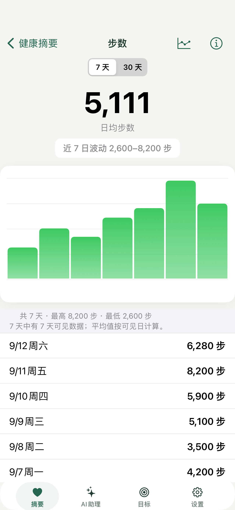
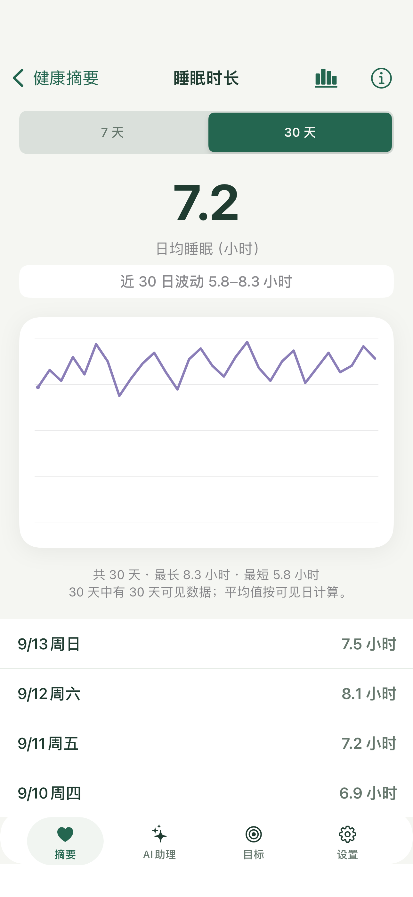
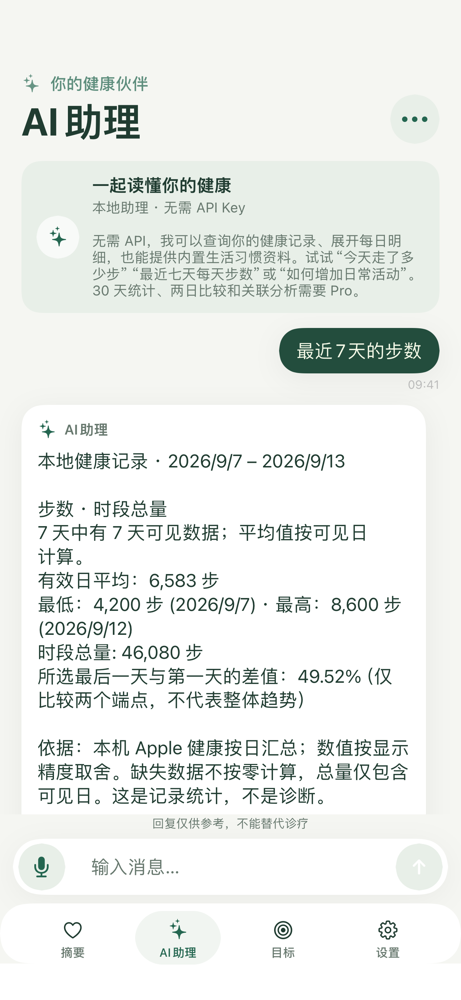
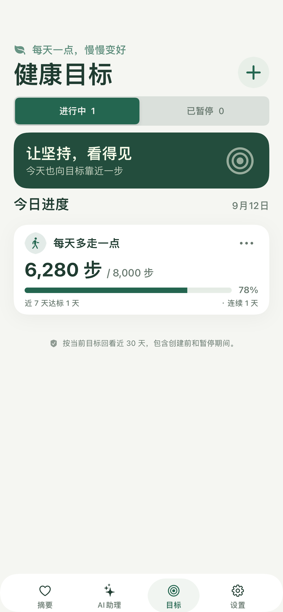

免费开始
无需 API Key，也不用订阅。含摘要、7 天趋势、基础本地问答、内置资料和 1 个目标。
免费下载即可开始。需要更长窗口和更多目标时，再在应用内购买 Pro。1.1.0 已在 App Store 提供。
无需 API Key，也不用订阅。含摘要、7 天趋势、基础本地问答、内置资料和 1 个目标。
¥38 中国大陆首发买断价
一次性非消耗型内购，商品 ID com.vitagauge.pro.lifetime。实际金额以 Apple 购买页为准。买断不含模型额度。
| 功能 | 免费 | Pro 买断 |
|---|---|---|
| 健康摘要与 16 项指标 | 包含 | 包含 |
| 7 天趋势、本地基础查询 | 包含 | 包含 |
| 内置生活习惯资料、使用帮助 | 包含 | 包含 |
| 健康目标 | 1 个 | 多个 |
| 30 天趋势与统计 | — | 包含 |
| 两日比较、指标关联 | — | 包含 |
| 自带 API Key 的在线 AI | — | 包含；模型费用另计 |
无自动续订，未开启家庭共享。用原 Apple 账户恢复购买。未购买不影响免费功能。




本地助理用规则、内置资料和确定性计算。支持最近 1 到 30 天及明确日期；更长窗口、两日比较和关联需要 Pro。缺失不当成零。关联不是因果。两种在线模式需要 Pro、自备 Key 和对接收方的同意。AI 回复不能替代诊疗。
元气指数用于健康记录整理与日常自我管理，不是医疗器械，不提供诊断、处方或急救监护。统计关联不代表因果。请在作出医疗决定前咨询合格的医疗专业人士。